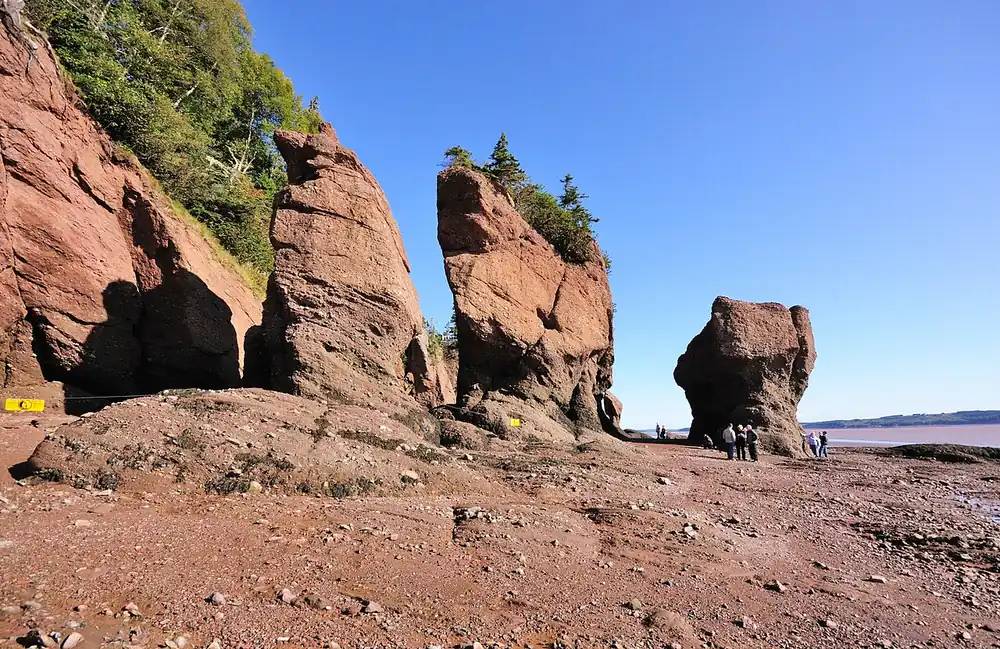

Hopewell Rocks — baie de Fundy
Nouveau-Brunswick, Canada · kayak

Rochers en forme de « pots de fleurs » sculptés par les marées de la baie de Fundy, parmi les plus hautes du monde. À marée basse on marche au pied des piliers ; à marée haute, on les contourne en kayak.
- Lieu
- Nouveau-Brunswick, Canada
- Niveau
- Intermédiaire
- Activités
- kayak
- Type d'eau
- Mer / océan
- Coordonnées
- 45.82, -64.57 (position approximative du secteur)
Dangers à connaître
- Marée qui monte très vite et courants puissants.
- Eau froide et boueuse.
- Chutes de pierres au pied des falaises.
Le conseil d'Ocean Buddy
Consulte les horaires de marée du parc : le kayak se fait seulement autour de la pleine mer, de préférence avec une sortie guidée.
Ouvrir dans Ocean Buddy Télécharger sur l'App Store
Source : Fiche Ocean Buddy · septembre 2026 · à vérifier localement.